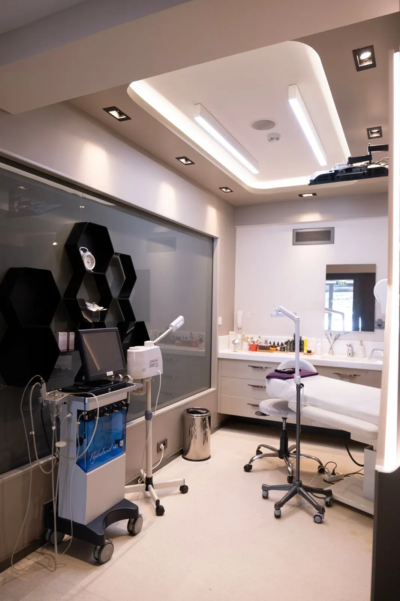

Início / A clínica
Setor Marista Goiânia
A clínica
Salas individuais, equipamentos com manutenção registrada e uma rotina de segurança que vale para todas as sessões, da primeira à última.

01 Estrutura
Feita para medir, tratar e reavaliar
Tudo o que a jornada precisa acontece no mesmo lugar, com a mesma ficha.
5
Salas individuais
Climatizadas, com maca elétrica e porta fechada. Você troca de roupa na própria sala.
1
Sala de avaliação
Balança de bioimpedância, adipômetro, fita métrica e parede de fotos com luz fixa e marcação no chão.
02 Segurança
A rotina que se repete em toda sessão
- Histórico conferidoRemédios, cirurgias, gestação e condições de saúde, atualizados a cada retorno.
- Pele inspecionadaAntes e depois de cada aplicação, com registro na ficha.
- Parâmetros anotadosTempo, potência, temperatura e área tratada, para repetir e comparar.
- Canal aberto depoisWhatsApp da clínica para avisar qualquer reação fora do esperado.
03 Onde estamos
Setor Marista, Goiânia
- Endereço
- Rua de Exemplo, 100, sala 4 · Setor Marista · Goiânia (GO) (endereço de exemplo)
- Horário
- Segunda a sexta, 8h às 20h · sábado, 8h às 13h
- Estacionamento
- Conveniado no prédio, com 1 hora de cortesia (exemplo)
- (62) 90000-0000 (número de exemplo)
- Responsável técnica
- Dra. Helena Vasconcelos, CRM-GO 00.000 (exemplo)
- CNPJ
- 00.000.000/0001-00 (exemplo)
Mapa ilustrativo. No site real, entra o mapa com o endereço da clínica.